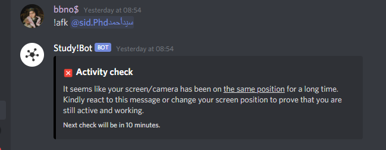
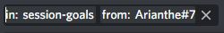
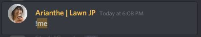
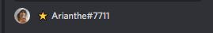

First and Foremost
This manual explains you the necessary commands with common examples, which you can use as a reference. Before starting, check the servers rules here: https://discordstudy.com/rules/
Now, as you’ll see in the Support Server (from here I’ll call it SS), there are channels with usernames. Whenever a member sends a DM to @Staff Support bot, a new thread with their names gets created. When dealing with each thread, there are specific commands that are used commonly. Feel free to send a DM to Staff Support to test everything out.
Inside a user thread:
!r or !reply followed by <text> - Common way to send a reply to the user. The reply is sent with the nickname you have is SS.
!close <time> -Closes the modmail thread. If a time is specified, the thread is scheduled to be closed later. Scheduled closing is cancelled if a message is sent to or received from the user.
!logs <page> -Lists previous modmail logs with this user. If there are a lot of logs, they will be paginated. In this case, you can specify the page number to view as an argument.
!alert -Pings you when the thread gets a new reply. Use !alert cancel to cancel.
!tags - Shows the list of templates
!tag <tagname> - Brings the template of called tag
Anywhere on the SS:
!newthread <userID> - Opens a new thread with the specified user !logs <userID><page> - Lists previous modmail logs with the specified user. If there are a lot of logs, they will be paginated. In this case, you can specify the page number to view as the second argument.
As mentioned above, we have template answers for the most common questions or issues. All templates can be edited depending on the thread before sending them, especially the ones with XXXXX mark should be edited accordingly. Here is the list of them:
- closed
- excessivedata
- impropergoal
- impropergoal10m
- movedafk
- video
- welcome
- nonstudyactivity
- music
- banned
- videosilent
- studybuddy
- stats
- me
- inactivestream
- serverad
- channelid
- namechange
- bots
- timerhelp
!tag closed – Shows the message to send to the user before closing their thread.
!tag excessivedata – If a member shows excessive hours of studying (for example: 20h/24h), they get disregarded from the leaderboard. However, it’s only Nadir who can access the data, so most of the time you won’t need to use this template.
!tag impropergoal – As stated in the rules, certain type of session goals, such as “same”, “asdasf” are not accepted. Goals such as “I’m crying”, “nothing”, “brb”, “coffee” etc. are not accepted either. In case of a user posting such goals, you can simply open their thread manually, and use this template to warn them.
!tag movedafk – If a user is afk for over 15m, you can move them to break/afk call and send this message.
!tag impropergoal10m – Some people *insist on* posting improper goals. If you see one improper goal, kindly check the user’s past goals. If those are also improper, use this template.
!tag video – when a member’s camera/screenshare is not loading properly and if they didn’t fix it after being notified, you can move them to break/afk and send this message.
!tag nonstudyactivity – if a member is caught doing non-study activity for over 10m(longer than a break), you can disconnect them from the call and send this message.
!tag music – template for the question “how can I use the music bots”
!tag banned – message to send when a user is banned. However moderators don’t have the permission to ban a user, therefore this template is mostly used by other staff members.
!tag videosilent – an alternative to video template. The difference is, you use this one if you decided to move the member to silent/self study call, instead of brak/afk call. This is used if you think the member might be just focused and didn’t receive your notification.
!tag inactivestream – if there’s no activity on stream window for over 15m (no page change, no cursor movement, etc), you can move them to break/afk call and send this message.
!tag serverad – when a user tries to send a discord link, their message gets deleted by the bots. This message is used to warn them, however moderators cannot access that data, therefore you won’t be using it.
!tag channelid – brings the ID numbers of the necessary channels
!tag namechange – when a member change their username, their stats goes back to 0.00h, in this case the system transfers their data from old username to the new one. However since this process can take hours, they send a message to the staff when they see their stats are gone. This is the message you can send to them.
!tag Bots – We often get questions about the bots and if how to find them. This message is the answer to those.
!tag Stats – Most people check their stats right after leaving the call and panic when they see their stats are not updated. This is a normal case. The stats take time to update and show on the !me and !p profiles. When there’s no issue with the bots, we use this template to tell them that it’s normal.
!tag me – Every once in a while a discord API hiccup, or another issue with the bots happen and the stats stop updating, which requires a restart or a fix by Nadir. In those cases, (after confirming that there IS an issue, and that it’s not the case in “stats” template) we use this template, and leave the thread open until the issue is fixed. After it’s fixed you can use “mefixed” template to return them again before closing the thread.
!tag Welcome - Some people like to contact Staff Support the moment they join the server. This is the template to tell them to watch the video and read #about-the-server and #how-to-use channels
!tag Timerhelp – For the common “how to use timer” question
Before we go into examples
When a DM comes from a member, there’s a short information on top of the thread like here:

By looking at this information you can guess how to approach them. New to discord? Go to very very basics. Joined the server 15 minutes ago? Chances are, they don’t know how the server works. You can also copy their ID here to check their profile in the server.
Now, example cases:
Inactive stream for 3-4 minutes
Most people do reading and note taking from a pdf file, and doesn’t show any activity. First we ask them to show activity if they’re present by using !afk <@user> in the in-server screenshare/camera chat. 
If they don’t show any activity, or don’t react to the message within 10 minutes, that’s when we move them out of the call and message them through SS by using inactivestream template.
Video/videosilent
If the user’s video is not loading, we notify them with !video <@user> first and if they don’t fix it within 10m, we move them out of the call and message them.

Improper Session Goals:
Examples to these as mentioned above: “skdfhsfs” (bunch of random letters), “burgers and nuggets”, “sleeping”, “break”, “try to not kill myself” etc.
The major difference between 2 improper goal templates is, one is just reminding them the rule and warning, the other is asking them to post a new goal within 10m. So, how to go with this?
If you target an improper goal, please check their past session goals in the server
And then check their logs to see if they were warned for posting improper goals in the past.
If there’s no issue, just warning them should be enough. However if they have improper goals in the past, or if they were warned before, AND if they’re still in a study call, then we use “impropergoal10m” template.
How to use this one?
This template asks them to post a new goal within 10 minutes. If they do post, all good, just add a note in the thread saying that “they posted a new goal” and the close the thread. If they don’t, then:
- Delete their improper goal
- Disconnect them from the call, this will force them to post a new goal upon rejoining the call
- If their new goal is proper, it’s fine. If the goal is still something improper:
Delete their goal, server mute them for 2h, and disconnect them from the call. This way, they won’t be able to post a goal at all and they’ll keep getting kicked out of the study call. You can then notify them and say they’re muted for 2 hours if you wish.
Unmute requests
We also get unmute requests from people. Half of the time, it’s when they use a filtered word and get muted by the bot. In some cases, the bot matches a syllable with a filtered word (ie: cockroach), and wrongfully mutes the person. In this case we can unmute them, and suggest them to censor the word. If it’s not a wrongful mute, then we tell them that they’ll get unmuted automatically in an hour.
In other half of the cases, it’s when people join a private or group call, and get muted by Study!Watcher before setting time. In this case aswell, we unmute them and remind them to be careful.
Namechange
This one is a bit confusing. When stats look like they got reset, it happens due to namechange. However it’s because their data is just being transferred. The user doesn’t understand the reason behind it and they say “my stats are suddenly gone”. First, we have to make sure that the reason is indeed namechange, and not another technical issue. For that, we go to the search function, and search user ID number in: #command-spam and #bots-spam. This will show us their !me profile. 
And at the bottom of their profile you can see their username.
What we do is checking their past profile data and find one that shows their past correct study hours and see if the name is different. If there is indeed a name change, then we use the namechange template to answer and send it. If there is no namechange, then it’s a technical issue only Nadir can fix. In this case, we send the user a message saying we’ve forwarded the issue to the Management Team for investigation. It might be good to remind them that it might take a while due to different timezones etc.
Closing threads: If the question/issue of the user is fixed and if the user is notified, we close their threads. The threads forwarded to Management Team, or the thread in which the user is expecting a return shouldn’t be closed.
Permissions of a moderator:
- Deleting the inappropriate messages, links, pictures
- Server-muting or unmuting members
- Moving or disconnecting people from calls
Banning a user: A moderator doesn’t have permissions to ban a user.
In cases when there’s a report towards someone, first thing we do is asking for proofs, such as screenshots of said claims.
In other cases such as a person sharing NSFW content, or flashing on camera, we first delete the post (or disconnect the person from the call), then server-mute the person in #mod-reports or in #support-team-commands (check #mod-tutorial for the commands) so that they won’t be able to text, screenshare, turn on camera or microphone. Then send the ID number/username of the person to SS and ping either Gene, Totti or Nadir, or all if none of them are online.
This is more or less all. You can always ping any of us while handling a thread and ask questions. When there are unique questions and if you know the answer, such as “what is cuckoo-forest”, you can send them the FAQ (https://discordstudy.com/faq/), or explain the answer as it is.